After a four year pandemic break, we were finally able to return to our trusty location, the campus of HAW Finkenau, for the third edition of the Ruby Unconf! Happy to see many newcomers and happy to spot many familiar faces who have returned for their second or even third time.
In case you don't know how an unconference works, attendees pitch their own talk ideas in the morning, and then every attendee votes for their favorite proposals. Here are some attendees trying to decide which talk gets their voting stickers.
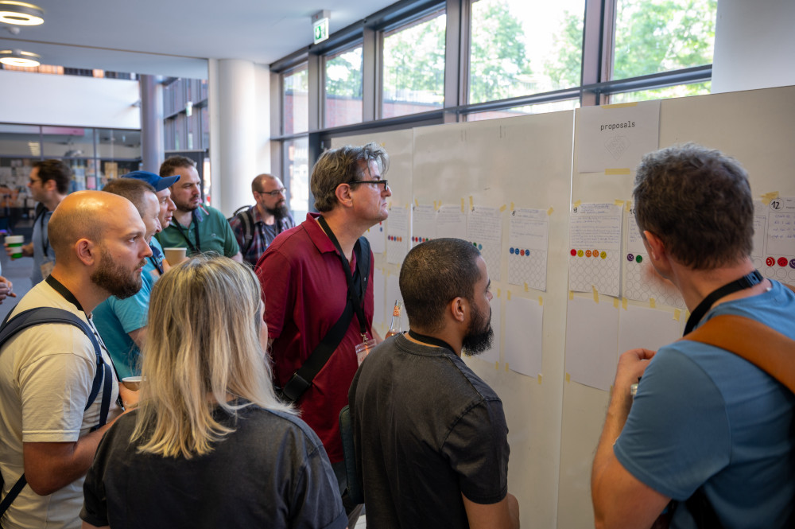After the voting, it was time for the only talk that was announced beforehand: Andreas Wenk gave a keynote on responsibility and sustainability in software development.
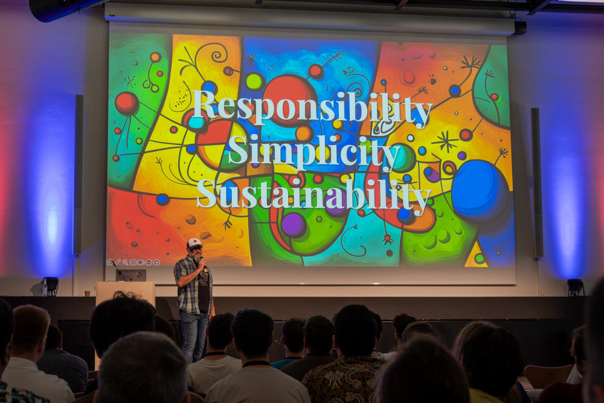For some talk highlights, Christian Bäuerlein presented on "the lost art of single file Ruby programs". Did you know an entire Rails app can be a single file?
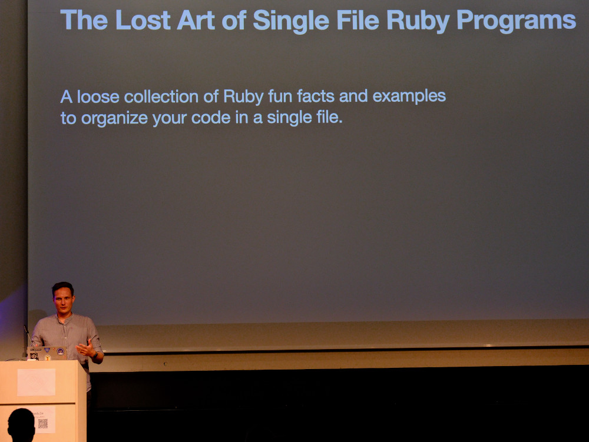And Sergy Sergyenko, organizer of the 2023 Euruko, managed to give not one, but two talks! Here he is speaking about legacy vs revenant code. Sergy enjoyed the unconference format so much that he even brought it to the Euruko!
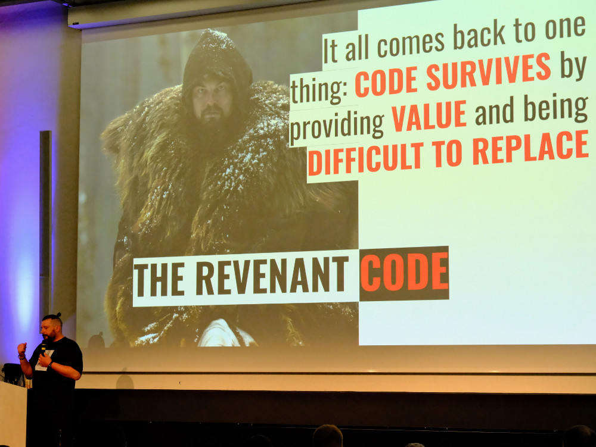Breakfast and lunch is included in the ticket, and our caterer served a delicious hot lunch - all vegetarian or vegan, too!
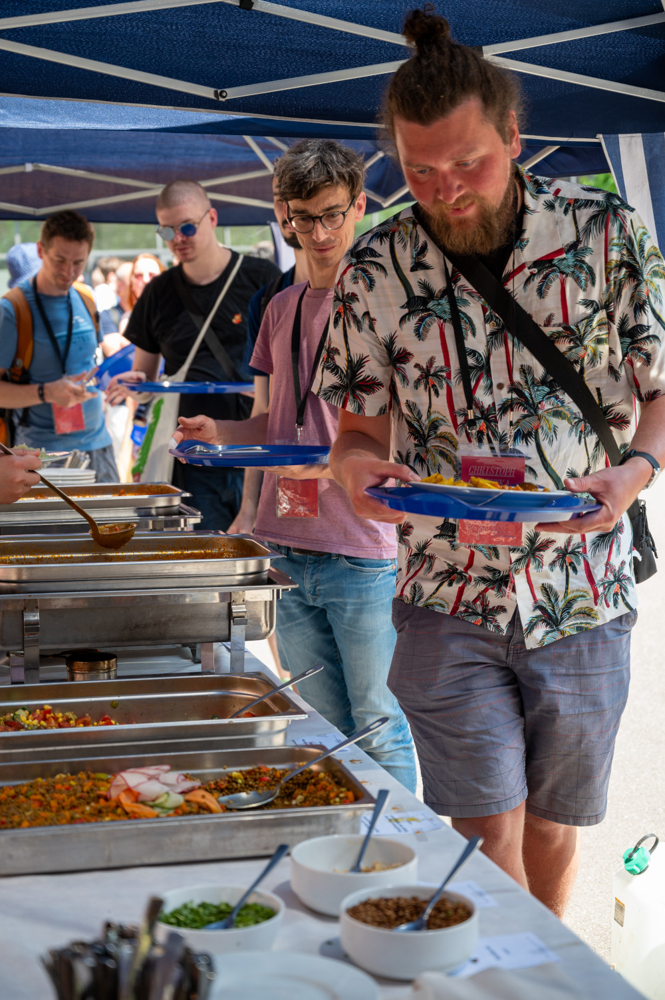The nice sunny weather allowed everyone to mingle outside.
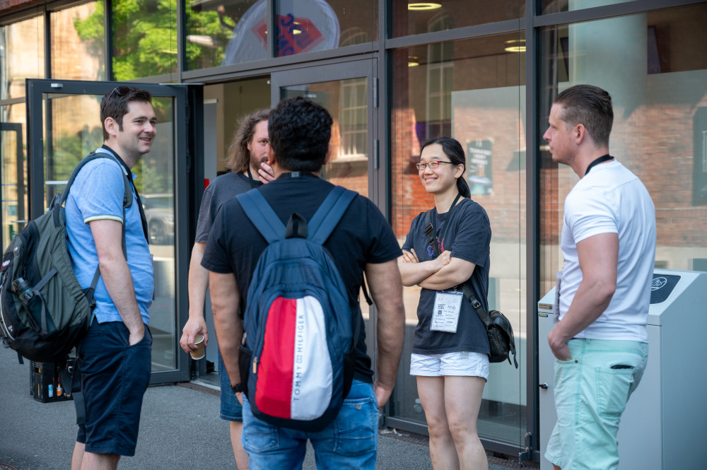 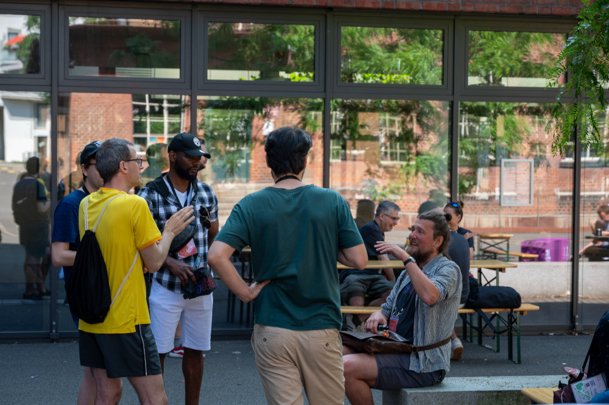We had some interactive sessions outside as well, here is one on deployment pipelines.
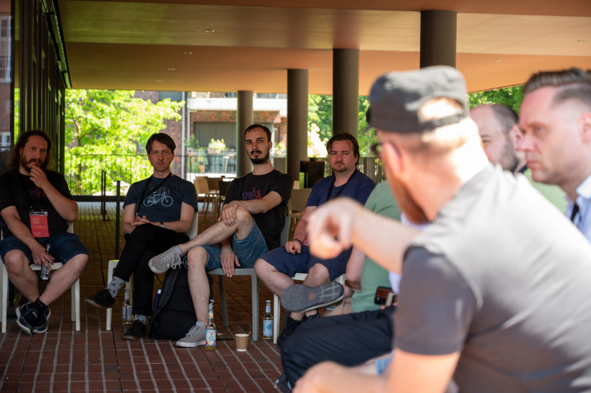Having the Unconf party at the Reeperbahn, Hamburg's most famous and street offering the most diverse range of entertainment, is a tradition by now. We had a great time at the Sommersalon!
For the people who need some stretching after a long day of sitting in talks, our sponsor YogaEasy organized a yoga session on the upper level outside.
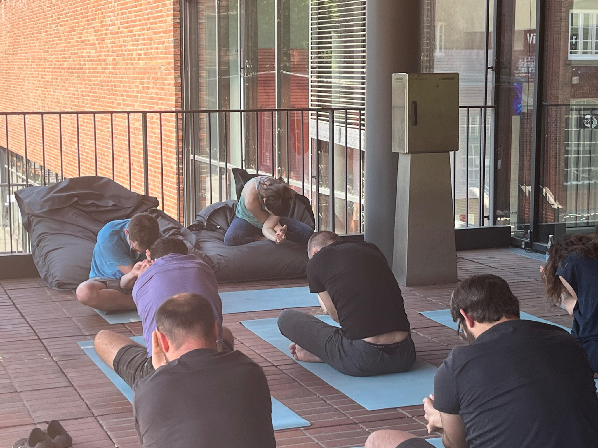Want to see how it all started? This is one of our early planning meetings for the Unconf:
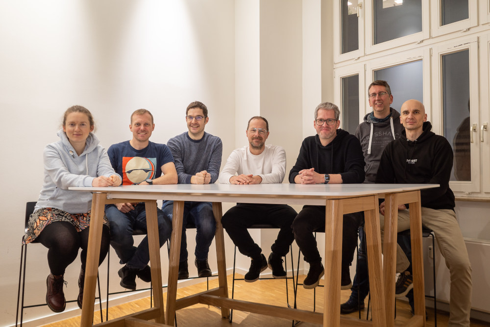And here is what we were doing it all for: family photo with all the attendees. Thank you everyone!
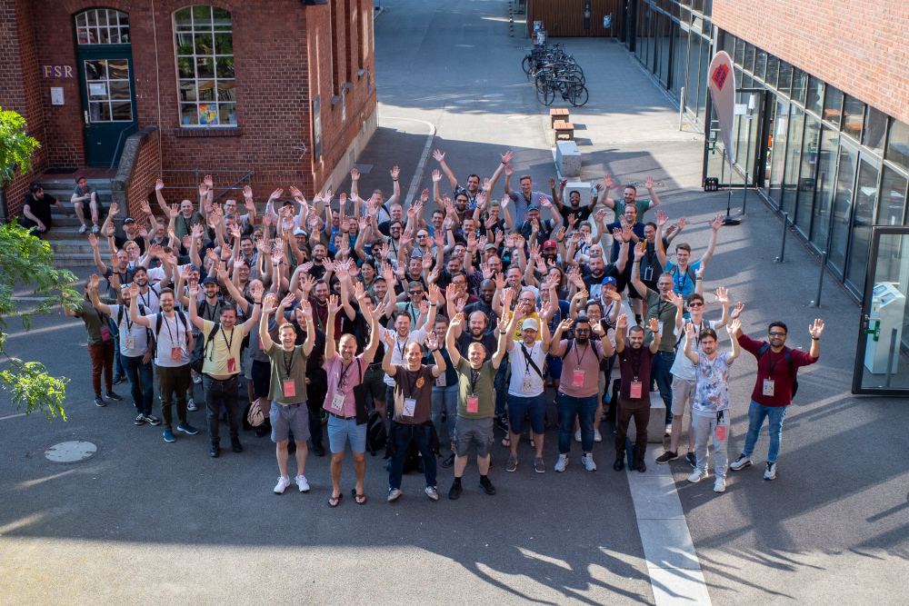